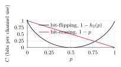
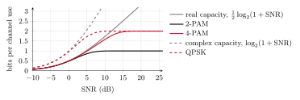

Topic 3. Mutual information and capacity
In this topic
Topic 2 ended with a question. The repetition code makes the error probability as small as we wish, but its rate goes to zero, and we asked whether a code can keep a positive rate while the error probability vanishes. In this topic we measure how much information a channel lets through, and this measure gives the answer. Sections 3.1 to 3.3 correspond to the first lecture and Sections 3.4 to 3.6 to the second.
We review the entropy, and we define the mutual information between the input and the output of a channel from their joint law.
We compute the mutual information of the bit-flipping and bit-erasing channels, and we separate the uncertainty of the output from the information that it carries about the input.
We define the capacity as the largest mutual information, and we state what the channel coding theorem promises for the rates below it.
We extend the entropy to continuous observations, and we obtain the capacity of the real and complex Gaussian channels under a constraint on the symbol energy.
We compare the information carried by 2-PAM, 4-PAM and QPSK with the Gaussian capacity, and we contrast the result with the exponential channel.
3.1 Entropy review
We start with the measure of uncertainty studied in the information theory course.
Definition 3.1.
The entropy of a discrete random variable X with values in a finite set \mathcal X and probabilities \Pr(x) is \begin{equation*} H(X)=-\sum_{x\in\mathcal X}\Pr(x)\log_2\Pr(x),\tag{3.1} \end{equation*} measured in bits, where the terms with \Pr(x)=0 count as zero.
The entropy is nonnegative, and it is zero only when one value has probability one. It is at most \log_2|\mathcal X|, the logarithm of the number of values, and it reaches this maximum when the values are equiprobable. A constellation of M equiprobable points therefore has entropy \log_2M, the number of bits that one symbol carries in the uncoded transmission of Topic 1.
For a bit that is 1 with probability p, the entropy is the binary entropy function, \begin{equation*} h_2(p)=-p\log_2p-(1-p)\log_2(1-p).\tag{3.2} \end{equation*} It vanishes at p=0 and p=1, it is symmetric around p=\tfrac12, so that h_2(p)=h_2(1-p), and it reaches its maximum of 1 bit at p=\tfrac12. Table 3.1 gives the values that we need for hand calculations, together with some logarithms.
| p | 0.01 | 0.05 | 0.1 | 0.11 | 0.2 | 0.25 | 0.3 | 0.4 | 0.45 | 0.5 |
| h_2(p) | 0.081 | 0.286 | 0.469 | 0.500 | 0.722 | 0.811 | 0.881 | 0.971 | 0.993 | 1 |
| u | 1.25 | 1.5 | 3 | 5 | 6 | 7 | 9 | 10 | 11 | e |
| \log_2u | 0.322 | 0.585 | 1.585 | 2.322 | 2.585 | 2.807 | 3.170 | 3.322 | 3.459 | 1.443 |
Table 3.1. Values of the binary entropy function and of the logarithm in base 2 for hand calculations.
Example 3.2.
A constellation of four points is used with probabilities \tfrac12, \tfrac14, \tfrac18 and \tfrac18. Since -\log_2\tfrac12=1, -\log_2\tfrac14=2 and -\log_2\tfrac18=3, its entropy is \begin{equation*} H(X)=\tfrac12\cdot1+\tfrac14\cdot2+\tfrac18\cdot3+\tfrac18\cdot3=1.75 \text{ bits},\tag{3.3} \end{equation*} below the 2 bits of four equiprobable points.
When two random variables are involved we also need the entropy of one of them once the other is known. For a channel with input X and output Y, the output has the law W(y|x) when the input is x, and the entropy of that law is \begin{equation*} H(Y|X=x)=-\sum_{y\in\mathcal Y}W(y|x)\log_2W(y|x).\tag{3.4} \end{equation*} The conditional entropy of the output given the input is its average over the input, \begin{equation*} H(Y|X)=\sum_{x\in\mathcal X}\Pr(x)\,H(Y|X=x).\tag{3.5} \end{equation*} It measures the uncertainty that the channel adds. On the bit-flipping channel, for instance, the output given the input is a bit that differs from the input with probability p, so H(Y|X=x)=h_2(p) for both inputs and H(Y|X)=h_2(p) whatever the input probabilities are.
3.2 Mutual information
The transmitter chooses the symbols with probabilities \Pr(x) and the channel has law W(y|x). By the product and sum rules of Table 1.1 of Topic 1, the joint law of input and output is \Pr(x)W(y|x), and the output has the probabilities \begin{equation*} \Pr(y)=\sum_{x\in\mathcal X}\Pr(x)\,W(y|x).\tag{3.6} \end{equation*}
Definition 3.3.
The mutual information between the input X and the output Y of a channel is \begin{equation*} I(X;Y)=\sum_{x\in\mathcal X}\sum_{y\in\mathcal Y}\Pr(x)\,W(y|x)\log_2\frac{W(y|x)}{\Pr(y)},\tag{3.7} \end{equation*} measured in bits per channel use, where the terms with \Pr(x)W(y|x)=0 count as zero.
The definition compares, for every pair (x,y), the probability W(y|x) of the output when x is sent with its probability \Pr(y) when we do not know what was sent. If the two coincide for all pairs, the output says nothing about the input, every logarithm is zero and so is the mutual information. The following result gives the form that we use in the calculations.
Proposition 3.4.
The mutual information is the entropy of the output minus the conditional entropy of the output given the input, \begin{equation*} I(X;Y)=H(Y)-H(Y|X).\tag{3.8} \end{equation*} It is nonnegative, it is zero when the output is independent of the input, and it is at most H(X) and at most H(Y).
We write the logarithm of the quotient in (3.7) as \log_2W(y|x)-\log_2\Pr(y) and split the sum in two. In the first part, the sum over y for a fixed x is -H(Y|X=x) by (3.4), and the average over x gives -H(Y|X) by (3.5). In the second part, the sum over x of \Pr(x)W(y|x) is \Pr(y) by (3.6), and what remains is -\smash{\sum_{y\in\mathcal Y}}\Pr(y)\log_2\Pr(y)=H(Y). The remaining properties were proved in the information theory course.
In words, the uncertainty H(Y) of the output has two origins, the choice of the symbol and the noise of the channel. The term H(Y|X) is the part due to the noise, and the mutual information is what is left, the part of the output that comes from the input. Since the definition is symmetric in the two variables, we also have I(X;Y)=H(X)-H(X|Y), that is, the uncertainty about the input minus the uncertainty that remains after observing the output.
Example 3.5.
On the bit-flipping channel with flip probability p, let the input be 1 with probability q. The output is 1 when a 1 is sent and not flipped, or when a 0 is sent and flipped, so by (3.6) \begin{equation*} \Pr(Y=1)=q(1-p)+(1-q)p,\tag{3.9} \end{equation*} and H(Y)=h_2\bigl(q(1-p)+(1-q)p\bigr). We saw in Section 3.1 that H(Y|X)=h_2(p). Hence, by (3.8), \begin{equation*} I(X;Y)=h_2\bigl(q(1-p)+(1-q)p\bigr)-h_2(p).\tag{3.10} \end{equation*} With equiprobable inputs, q=\tfrac12, the output is equiprobable too and I(X;Y)=1-h_2(p). For p=0.1 this is 1-0.469=0.531 bits per channel use.
Problem 3.6.
Compute the mutual information of the bit-erasing channel with erasure probability p when the input is 1 with probability q.
Show solution
The output takes three values. By (3.6), it is an erasure with probability p whatever the input, it is 1 with probability q(1-p) and it is 0 with probability (1-q)(1-p). Its entropy is \begin{equation*} H(Y)=-p\log_2p-q(1-p)\log_2\bigl(q(1-p)\bigr)-(1-q)(1-p)\log_2\bigl((1-q)(1-p)\bigr).\tag{3.11} \end{equation*} We write each logarithm of a product as a sum of logarithms and collect the terms. Those with \log_2p and \log_2(1-p) add up to h_2(p), because q(1-p)+(1-q)(1-p)=1-p, and those with \log_2q and \log_2(1-q) add up to (1-p)h_2(q). Hence, H(Y)=h_2(p)+(1-p)h_2(q). Given the input, the output is either the input or an erasure, with probabilities 1-p and p, so H(Y|X)=h_2(p). By (3.8), \begin{equation*} I(X;Y)=(1-p)\,h_2(q).\tag{3.12} \end{equation*} The input carries h_2(q) bits, and a fraction 1-p of the symbols arrives intact.
3.3 Capacity and the coding theorem
The mutual information depends on the channel and on the input probabilities. The channel is given, but the input probabilities are chosen by the designer of the system, and it is natural to choose the best ones.
Definition 3.7.
The capacity of a channel is the largest mutual information over all the input distributions, \begin{equation*} C=\max_{\Pr(x)}I(X;Y),\tag{3.13} \end{equation*} measured in bits per channel use.
For the bit-flipping channel, the second term of (3.10) does not depend on q, and the first is at most 1, with equality for q=\tfrac12. For the bit-erasing channel, (3.12) is largest for q=\tfrac12 as well. Hence, \begin{equation*} C_{\rm BSC}=1-h_2(p)\tag{3.14} \end{equation*} and \begin{equation*} C_{\rm BEC}=1-p,\tag{3.15} \end{equation*} both achieved by equiprobable inputs. Figure 3.1 shows the two capacities. The erasure channel has the larger capacity for small p, in agreement with Exercise 2.1 of Topic 2, because an erased bit is known to be missing, whereas a flipped bit looks like a correct one. The capacity of the bit-flipping channel is zero at p=\tfrac12 and returns to 1 at p=1, because a channel that flips every bit is as good as one that flips none, once the receiver knows it.

Figure 3.1. Capacity of the bit-flipping and bit-erasing channels as a function of the parameter p.
The equiprobable input is not always the best one, as the following example shows.
Example 3.8.
In Exercise 2.5 of Topic 2, the exponential channel followed by the detector of Topic 1 became a binary channel in which a 1 is never flipped and a 0 is flipped with probability \varepsilon. Let \varepsilon=\tfrac12 and let the input be 0 with probability q. The output is 1 when a 1 is sent, or when a 0 is sent and flipped, so \Pr(Y=1)=1-q+\tfrac q2=1-\tfrac q2. Given X=1 the output is certain, and given X=0 it is an equiprobable bit, so H(Y|X)=q\,h_2(\tfrac12)=q. By (3.8), \begin{equation*} I(X;Y)=h_2\bigl(\tfrac q2\bigr)-q.\tag{3.16} \end{equation*} Table 3.2 evaluates this expression. The largest value is obtained for q=0.4, and Exercise 3.7 shows that it is the capacity, C=\log_2\tfrac54=0.322 bits per channel use. The input that suffers the noise is used less often than the other, but it is still used. The equiprobable input gives 0.311, only slightly less.
| q=\Pr(X=0) | 0.2 | 0.3 | 0.4 | 0.5 | 0.6 |
|---|---|---|---|---|---|
| I(X;Y) | 0.269 | 0.310 | 0.322 | 0.311 | 0.281 |
Table 3.2. Mutual information of the channel of Example 3.8 for several input distributions.
The capacity is defined by a formula, and its importance comes from the following theorem, due to Shannon, which we state without proof.
Theorem 3.9.
[Channel coding theorem]
Consider a memoryless channel with capacity C and codes with equiprobable messages. For every rate R<C and every \epsilon>0, there is a code of rate at least R, of sufficiently large length n, whose error probability with the ML decoder is at most \epsilon. Conversely, for every rate R>C the error probability of any code stays above a positive constant, however large n is.
Three quantities in bits per channel use appear in this topic, and they play different roles.
The rate R=k/n belongs to the code. It is what the transmitter attempts to send.
The mutual information I(X;Y) belongs to the channel together with an input distribution. It is the threshold of the rates at which reliable transmission is possible with codewords whose symbols follow that distribution.
The capacity C belongs to the channel alone. It is the threshold of the rates at which reliable transmission is possible, whatever the input; Theorem 3.9 says nothing about the rate C itself.
The theorem answers the question of Topic 2. Reliable transmission does not require the rate to go to zero. It is enough that the rate stays below the capacity, and the price of a smaller error probability is a longer code, not a smaller rate. Table 3.3 places the repetition code against this limit on the bit-flipping channel with p=0.1. To reach an error probability below 10^{-6}, the repetition code needs n=23 and a rate of 0.04, while the capacity is 0.53, more than ten times larger.
| Scheme | Rate (bits per channel use) | Error probability |
|---|---|---|
| Uncoded | 1 | 10^{-1} |
| Repetition, n=3 | 0.33 | 2.8\cdot10^{-2} |
| Repetition, n=11 | 0.09 | 3.0\cdot10^{-4} |
| Repetition, n=23 | 0.04 | 4.7\cdot10^{-7} |
| Best codes of length n | any R<0.53 | as small as desired for large n |
Table 3.3. The repetition code and the limit of the coding theorem on the bit-flipping channel with p=0.1.
3.4 Differential entropy
On the Gaussian and exponential channels the output is a real or complex number, and its law is a density. As in Table 1.1 of Topic 1, the sums become integrals.
Definition 3.10.
The differential entropy of a real random variable X with density f(x) is \begin{equation*} h(X)=-\int_{-\infty}^{\infty}f(x)\log_2f(x)\drm x,\tag{3.17} \end{equation*} measured in bits, where the points with f(x)=0 do not contribute.
The differential entropy shares the form of the entropy but not all its properties. It does not change when a constant is added to the variable, since the density is only displaced. It changes when the variable is scaled: if Y=aX with a\neq0 then h(Y)=h(X)+\log_2|a|, because the density is stretched by |a| in width and divided by |a| in height. As a consequence, it can be negative.
Example 3.11.
A uniform random variable on an interval of length a has density \tfrac1a on that interval, so \begin{equation*} h(X)=-\int_{0}^{a}\frac1a\log_2\frac1a\drm x=\log_2a.\tag{3.18} \end{equation*} For a=1 the differential entropy is zero, and for a=\tfrac12 it is -1 bit. Only differences of differential entropies have a meaning, and the mutual information is such a difference.
Problem 3.12.
Compute the differential entropy of a real Gaussian random variable of variance \sigma^2, of a complex Gaussian random variable of total variance \sigma^2, and of an exponential random variable of mean \mu. For the complex Gaussian, assume independent real and imaginary parts, each of variance \sigma^2/2.
Show solution
For the real Gaussian with mean m, the logarithm of the density is \begin{equation*} \log_2f(x)=-\tfrac12\log_2(2\pi\sigma^2)-\frac{(x-m)^2}{2\sigma^2}\log_2e.\tag{3.19} \end{equation*} The differential entropy is minus the expectation of this quantity. The first term is a constant, and the expectation of (X-m)^2 is the variance \sigma^2, so \begin{equation*} h(X)=\tfrac12\log_2(2\pi\sigma^2)+\tfrac12\log_2e=\tfrac12\log_2(2\pi e\sigma^2).\tag{3.20} \end{equation*} The mean does not appear, as expected. By the stated assumption, the complex Gaussian has independent real and imaginary parts, each of variance \tfrac{\sigma^2}2. The differential entropy of a complex variable is that of the pair of its real and imaginary parts, with a double integral in (3.17), and for independent parts it is the sum of their differential entropies, so \begin{equation*} h(X)=2\cdot\tfrac12\log_2\Bigl(2\pi e\,\frac{\sigma^2}{2}\Bigr)=\log_2(\pi e\sigma^2).\tag{3.21} \end{equation*} For the exponential, the logarithm of the density is -\log_2\mu-\tfrac x\mu\log_2e for x\geq0, and the expectation of X is \mu, so \begin{equation*} h(X)=\log_2\mu+\log_2e=\log_2(e\mu).\tag{3.22} \end{equation*}
Among the discrete random variables with a given number of values, the equiprobable one has the largest entropy. For continuous variables the corresponding statement needs a constraint, since otherwise the density can be made as wide as we wish.
Theorem 3.13.
Among the real random variables of variance \sigma^2, the Gaussian has the largest differential entropy, given by (3.20). Among the complex random variables with \EE(|X|^2)\leq\sigma^2, the largest is that of the zero-mean complex Gaussian, given by (3.21). Among the nonnegative random variables of mean \mu, the largest is that of the exponential, given by (3.22).
The proof of the first statement is Exercise 3.8, and the other two are proved in the same way. The mutual information of a channel with continuous output is defined as in (3.7), with an integral over y and the density of the output in the place of \Pr(y); when the input has a density the sum over x becomes an integral too, and when it mixes point masses and a density, as in Section 3.6, the average over x combines both. Proposition 3.4 becomes \begin{equation*} I(X;Y)=h(Y)-h(Y|X).\tag{3.23} \end{equation*} On the three continuous channels of Table 1.2 of Topic 1 the output is Y=X+Z, with the noise Z independent of the input. Given X=x, the output is the noise displaced by x, and a displacement does not change the differential entropy. Hence, h(Y|X)=h(Z) and \begin{equation*} I(X;Y)=h(Y)-h(Z).\tag{3.24} \end{equation*} The second term is a property of the noise alone. To make the mutual information large, the transmitter has to make the differential entropy of the output large.
3.5 Gaussian capacity
Without any restriction on the input, the capacity of the Gaussian channel is infinite. The transmitter can place as many points as it wishes, as far from each other as needed for the noise to be negligible. What limits the transmission is the energy. We therefore take the maximum in (3.13) over the input distributions that satisfy the energy constraint \begin{equation*} \EE(|X|^2)\leq\Es,\tag{3.25} \end{equation*} and the capacity becomes a function of the signal-to-noise ratio \snr=\Es/\sigma^2.
Theorem 3.14.
The capacity of the real Gaussian channel with noise variance \sigma^2 and energy constraint (3.25) is \begin{equation*} C=\tfrac12\log_2(1+\snr)\tag{3.26} \end{equation*} bits per channel use, and that of the complex Gaussian channel is \begin{equation*} C=\log_2(1+\snr)\tag{3.27} \end{equation*} bits per channel use. Both are achieved by a zero-mean Gaussian input of variance \Es.
We prove the complex case. Since the input and the noise are independent and the noise has zero mean, \EE(|Y|^2)=\EE(|X|^2)+\sigma^2\leq\Es+\sigma^2. By Theorem 3.13, h(Y)\leq\log_2\bigl(\pi e(\Es+\sigma^2)\bigr), and by (3.21) h(Z)=\log_2(\pi e\sigma^2). Hence, by (3.24), \begin{equation*} I(X;Y)\leq\log_2\bigl(\pi e(\Es+\sigma^2)\bigr)-\log_2(\pi e\sigma^2)=\log_2\Bigl(1+\frac{\Es}{\sigma^2}\Bigr).\tag{3.28} \end{equation*} If the input is a zero-mean complex Gaussian of variance \Es, the output is the sum of two independent Gaussians, hence a zero-mean complex Gaussian of variance \Es+\sigma^2, and the inequality is an equality. The real case is identical with (3.20) in the place of (3.21).
The two formulas are consistent with each other. A complex channel use consists of two real ones, the real and the imaginary parts. With a complex Gaussian input, each part has energy \tfrac{\Es}2 and noise variance \tfrac{\sigma^2}2, so it has the same SNR as the whole, and the two parts together carry twice (3.26). Table 3.4 gives some values.
| SNR | 1 | 3 | 7 | 15 | 31 | 63 | 127 |
| SNR (dB) | 0 | 4.8 | 8.5 | 11.8 | 14.9 | 18.0 | 21.0 |
| Real channel, \tfrac12\log_2(1+\snr) | 0.5 | 1 | 1.5 | 2 | 2.5 | 3 | 3.5 |
| Complex channel, \log_2(1+\snr) | 1 | 2 | 3 | 4 | 5 | 6 | 7 |
Table 3.4. Capacity of the Gaussian channels, in bits per channel use, at the values of the SNR for which the logarithm is an integer.
The table shows the behavior at high SNR. Doubling the SNR, that is, adding 3 dB, adds about one bit per channel use on the complex channel and half a bit on the real one, since \log_2(2\,\snr)=1+\log_2\snr. At low SNR the growth is linear rather than logarithmic. Since \ln(1+u)\approx u for small u, the capacity of the complex channel is approximately \snr\log_2e=1.44\,\snr, proportional to the energy.
Example 3.15.
A complex Gaussian channel has \Es=6 and \sigma^2=2, so \snr=3 and C=\log_24=2 bits per channel use. A code of rate R=\tfrac32 can be made reliable on this channel, and a code of rate R=\tfrac52 cannot. With the same SNR, the real Gaussian channel has C=1 bit per channel use, and neither of the two rates is possible.
3.6 Finite constellations
The Gaussian input that achieves the capacity is not a constellation. It takes all the values of the real line or of the complex plane. A practical transmitter uses the M points of a constellation \mathcal X, with equal probabilities in all that follows, and the rates at which it can transmit reliably are bounded by the mutual information I(X;Y) for that input, not by the capacity. By Proposition 3.4 this mutual information is at most H(X)=\log_2M, however large the SNR is.
For M equiprobable points on the complex Gaussian channel, the definition (3.7) with the law of Table 1.2 of Topic 1 becomes \begin{equation*} I(X;Y)=\log_2M-\frac1M\sum_{x\in\mathcal X}\EE\biggl(\log_2\sum_{x'\in\mathcal X}e^{-(|x+Z-x'|^2-|Z|^2)/\sigma^2}\biggr),\tag{3.29} \end{equation*} where the expectation is over the noise Z. On the real channel the exponent has 2\sigma^2 in the denominator. The expectation has no closed form and is computed numerically. Figure 3.2 and Table 3.5 give the result for 2-PAM and 4-PAM on the real channel, and for QPSK on the complex channel, for which no new computation is needed. Its real and imaginary parts are two independent 2-PAM transmissions with the same SNR as the whole, as we saw for the capacity, so QPSK carries twice the information of 2-PAM at the same SNR.

Figure 3.2. Mutual information of equiprobable 2-PAM and 4-PAM on the real Gaussian channel, with the capacity of the channel (solid lines), and of equiprobable QPSK on the complex channel, with its capacity (dashed lines). At equal SNR, the complex capacity is twice the real capacity and the QPSK curve is twice the 2-PAM curve; the mutual information of 16-QAM, not shown, is twice the 4-PAM curve.
| Real channel | Complex channel | ||||
| SNR | capacity | 2-PAM | 4-PAM | capacity | QPSK |
| 0 dB | 0.50 | 0.49 | 0.49 | 1.00 | 0.97 |
| 5 dB | 1.03 | 0.86 | 0.99 | 2.06 | 1.72 |
| 10 dB | 1.73 | 1.00 | 1.58 | 3.46 | 1.99 |
| 15 dB | 2.51 | 1.00 | 1.96 | 5.03 | 2.00 |
| 20 dB | 3.33 | 1.00 | 2.00 | 6.66 | 2.00 |
Table 3.5. Values of the curves of Figure 3.2, in bits per channel use, and the corresponding values for the complex channel.
The curves have three regions.
For the constellations studied, the mutual information has the same first-order behavior as Gaussian capacity as the SNR tends to zero. The curves have the same derivative with respect to the linear SNR at \snr=0, but their values differ at positive SNR.
As the SNR grows without bound, the mutual information of each equiprobable constellation approaches \log_2M bits per channel use from below. This limiting behavior is called saturation. At finite SNR, Gaussian noise still leaves uncertainty about the input, so the limit is not attained.
In between, the curve of a constellation separates from the capacity as it approaches its saturation value.
The practical consequence is a rule for the choice of the constellation. To transmit at a rate R, we choose a constellation with \log_2M somewhat larger than R, whose mutual information at the operating SNR exceeds R, and a code of rate R on its symbols. For instance, at a rate of 0.9 bits per channel use the capacity requires 4 dB, 2-PAM requires 5.8 dB because it is close to its saturation, and 4-PAM requires 4.2 dB.
For a binary encoder, let k information bits produce n_{\rm c} coded bits, and define the binary code rate r=k/n_{\rm c}. Mapping m coded bits to each symbol of an M=2^m constellation gives n=n_{\rm c}/m transmitted symbols. The overall rate in information bits per channel use is therefore \begin{equation*} R=\frac{k}{n}=r\log_2M.\tag{3.30} \end{equation*} Thus r counts information bits per coded bit, while R counts information bits per transmitted symbol.
Example 3.16.
A real Gaussian channel has an SNR of 10 dB. By Table 3.5, its capacity is approximately 1.73 bits per channel use. The mutual information is approximately 1.00 for equiprobable 2-PAM and 1.58 for equiprobable 4-PAM, in bits per channel use. These are rounded values. For 2-PAM the value is about 0.996756, strictly below 1, so a rate of exactly 1 bit per channel use cannot be made reliable at this SNR. A binary code of rate r=\tfrac34 followed by 4-PAM sends R=r\log_24=\tfrac34\cdot2=1.5 information bits per channel use, below 1.58, so codes of this kind can be made reliable. Uncoded 4-PAM sends 2 bits per channel use, above 1.58, and its error probability cannot be made small at this SNR.
We close with the exponential channel, which reminds us that the Gaussian results depend on the noise and on the constraint. Its inputs are energies, so the constraint is on their mean, \EE(X)\leq\Es, and its SNR is \Es/\mu.
Problem 3.17.
Show that the capacity of the exponential channel with mean noise \mu and constraint \EE(X)\leq\Es is at most \log_2(1+\Es/\mu) bits per channel use.
Show solution
The output Y=X+Z is nonnegative, and its mean is \EE(X)+\mu\leq\Es+\mu. By Theorem 3.13, its differential entropy is at most that of an exponential of mean \Es+\mu, that is, h(Y)\leq\log_2\bigl(e(\Es+\mu)\bigr). By (3.22), h(Z)=\log_2(e\mu). Hence, by (3.24), \begin{equation*} I(X;Y)\leq\log_2\bigl(e(\Es+\mu)\bigr)-\log_2(e\mu)=\log_2\Bigl(1+\frac{\Es}{\mu}\Bigr)\tag{3.31} \end{equation*} for every input that satisfies the constraint.
In this topic the rates are in bits per channel use, and the channel use is an abstract unit. Topics 4 and 5 show what a channel use is for a waveform, and Topic 6 translates the capacity into bits per second as a function of the power and the bandwidth.
What to remember
The mutual information is I(X;Y)=H(Y)-H(Y|X), the uncertainty of the output minus the part of it that is due to the noise. It depends on the channel and on the input distribution.
The capacity is the largest mutual information over the input distributions. It is 1-h_2(p) for the bit-flipping channel and 1-p for the bit-erasing channel, both with equiprobable inputs.
The coding theorem promises codes with error probability as small as desired at every rate R<C, and none at rates R>C. It is a statement about the best long codes, not about a given code.
For continuous outputs the entropy becomes the differential entropy. With additive noise, I(X;Y)=h(Y)-h(Z). For a given variance, the Gaussian has the largest differential entropy.
Under the constraint \EE(|X|^2)\leq\Es, the capacity is \tfrac12\log_2(1+\snr) on the real Gaussian channel and \log_2(1+\snr) on the complex one, achieved by a Gaussian input. At high SNR, 3 dB more give one more bit on the complex channel.
The constellations studied share the first-order behavior of Gaussian capacity as the SNR tends to zero. An equiprobable constellation of M points approaches \log_2M bits from below as the SNR grows without bound. To transmit at a rate R we choose \log_2M somewhat larger than R, with a mutual information above R at the operating SNR.